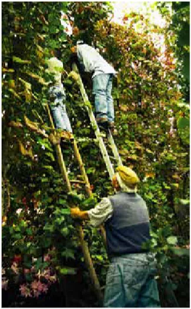
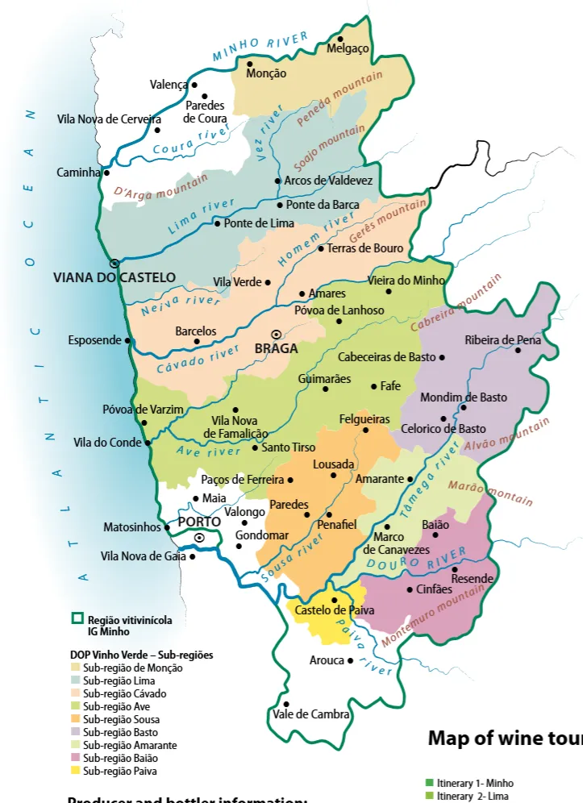

Chapter 4 · The Portuguese wine regions
Vinho Verde Wine Region
Key figures (2022)
Viticultural area: 24,371 ha (IVV) (17,268 ha according to other estimates)
Total Production: 1,004,277 litres
Average yield: 4,120 litres/ha
Certified wine types: 96 % DO wine
N.º of commercial growers: 13,110
bottling wineries: 379
History
There are references to viticulture in the Vinho Verde region dating back to Roman times. The subregions of Basto, Ribeira do Tâmega, Monção and Ribeira Lima have been well known for their quality wine since the beginning of modern times. The first exports of these wines left Monção and Ribeira Lima for England from the port of Viana at the beginning of the 16th century. The demarcation of various viticultural regions began in 1908. Great progress was made in terms of quality in 1926, with regulations regarding production and distribution of Vinho Verde being established and the founding of the Comissão de Viticultura da Região dos Vinhos Verdes (Viticultural Commission of the Vinho Verde Region), the body responsible for initiating research under the leadership of Eng. J. Amândio Galhano into the choice of the best regional varieties adapted to their specific terroir, since this method had been successfully implemented in the previous century.
Terroir
Climate Köppen-Geiger classification:
Csb. Humid temperate climate with summer dry season. Cold nights and sub-humid. MCC System indices (Tonietto & Carbonneau, 2004): heliothermal index (HI): H-1, cool night index (FI): +1.
Rainfall: 1,400 mm unevenly distributed throughout the year, concentrated mainly in the autumn– winter period. Maritime winds with frequent fog and high relative humidity. Frost in early spring and risk of hail from mid-May onwards. Geology
Vineyard elevation: Mostly between 50 and 300 metres. Geology and soil science: Orographically, the region gradually rises inland from the seafront, exposing the whole area to the influence of the Atlantic Ocean, a phenomenon reinforced by the orientation of the valleys of the main rivers, which run from east to west, facilitating the penetration of the sea winds. Mostly, the vineyards are found in plutonic rock substratum (granites, tonalites, syenites and nepheline syenites), yet the diversity of pedological spots on which vineyards are established (including schist and clay limestone spots) should be emphasized the layer covering the lithosphere, which interacts with the atmosphere, the hydrosphere and the biosphere.
Types of Wine Produced
Minho IG wine or Minho regional
wine: Red, white, rosé, sparkling.
DO Vinho Verde (+ other regional appellations): Red, white, rosé, sparkling. Vinho Verde DO sparkling wines (VEQPRD) Aguardente de Vinho da Região dos
Vinhos Verdes (Vinho Verde brandy from wine spirit) Aguardente de Bagaceira da Região
dos Vinhos Verdes (Vinho Verde grape marc spirit)
Vinagre de Vinho Verde (Vinho Verde vinegar).

Regional contacts
Technical information: Comissão de Viticultura da Região dos Vinhos Verdes (“Viticultural Commission of the Vinho Verde Region”), Rua da Restauração 318, 4050-Porto (link: www.vinhoverde.pt) Cultural information on the wine
of the region: Confraria do Vinho Verde (Vinho Verde Confraternity) secretaria@confrariadovinhoverde. com Various subregions intend to create viticultural museums. Institutions of higher learning and
viticultural research: Universidade de Minho, Largo do Paço, 4704-553 Braga, www.uminho.pt, Escola Superior Agrária de Ponte de Lima; www.esa. ipvc.pt
Certification authority: Comissão de Viticultura da Região dos Vinhos Verdes (Viticultural Commission of the Vinho Verde Region) 4050-501 PORTO Rua da Restauração, 318, Tel. 00351 226 077 300; e-mail: info@vinhosverde.pt;
Website: www.vinhoverde.pt
Enotourism information: Vinho Verde Wine Route, Tel. 226 077 300; Porto (Website: www.rota.vinhoverde.pt)


Producer and bottler information:
http://www.ivv.min-agricultura.pt/ np4/1736.html, Yearbook pages 99–111. rota.vinhoverde.pt and the Comissão de Viticultura da Região dos Vinhos Verdes – CVRVV (Viticultural Commission of the Vinho Verde
Region): www.vinhoverde.pt.
Botany (biodiversity features) and authorised varieties
IGP “Minho”
Legal basis: Ministerial Order n.º 154/2015 of 27 May, Ministerial Order n.º 159/2014 of 19 August, Ministerial Order n.º 379/2012 of 21 November and Decree-Law n.º 212/2004 of 23 August.
Varieties authorised in Vinho Verde
Red Wines: Alfrocheiro (Tinta Bastardinha), Alicante Bouschet, Alvarelhão (Brancelho), Amaral, Aragonez (Tinta Roriz, Tempranillo), Baga, Borraçal, Cabernet Franc, Cabernet Sauvignon, Castelão, Doçal, Doce, Espadeiro, Espadeiro Mole, Grand Noir, Jaen (Mencia), Labrusco, Merlot, Mourisco, Padeiro, Pedral, Pical, (Piquepoul Noir), Pinot Noir, Rabo de Anho, Sezão, Syrah (Shiraz), Tinta Barroca, Touriga Nacional, Trincadeira (Tinta Amarela, Trincadeira Preta), Verdelho Tinto, Verdial Tinto, Vinhão (Sousão), Gewürztraminer and Pinot Gris (Pinot Grigio).
White wines: Alvarinho, Arinto (Pedernã), Avesso, Azal, Batoca (Alvaraça), Cainho, Cascal, Chardonnay, Chenin, Colombard (Semilão), Diagalves, Esganinho, Esganoso, Fernão Pires (Maria Gomes), Folgasão, Gouveio, Lameiro, Loureiro, Malvasia- Fina, Malvasia Rei, Müller Thurgau, Pinot Blanc, Pintosa, Rabo de Ovelha, Riesling, São Mamede, Sauvignon (Sauvignon Blanc), Sercial (Esgana Cão), Tália (Ugni Blanc, Trebbiano Toscano), Trajadura (Treixadura), Verdelho, Viognier and Viosinho.

Prestigious wineries
in the region:
Quinta da Aveleda: A family business founded 150 years ago by Manoel Pedro Guedes. Aveleda wines are produced with grapes from different subregions of the Vinho Verde region. Quinta de Aveleda has also invested in other wine regions: Quinta Vale D. Maria (Douro) and Quinta do Vale Sabor. Quinta d’Aguieira (Bairrada), Villa Alvor (Algarve). In addition to 400 ha of its own vineyards, the company has contracts with large-scale independent vineyards and produces 19 million bottles of wine, 70% of which are exported. Five years ago, sales already totalled more than 38 million euros.

Adega Cooperativa de Monção:

This cooperative winery was founded in 1958, and has made the Muralhas de Monção label one of the best known vinho verdes in Portugal. 1999 saw the construction of the Melgaço branch, which 1,720 members, whose 1,237 hectares of vineyards produce 8,000,000 kg of grapes, resulting in more than 10 million bottles of wine each year. The Cooperative is noted for its incomparably favourable microclimate and its Alvarinho white wines: Although the mostly granitic soils are fed by high rainfall, the climate is mostly mild. It has a special microclimate that is perfectly suited to the variations in the terrain. Sandwiched between steep slopes and open valleys, the wines reflect the nuances of the landscape. The Adega Cooperativa de Ponte

de Lima has an 11.5 million litre installed capacity, around 1,000 active producers collectively ensuring an annual havest of 4 million kilograms of grapes. The Cooperative is noted for its incomparably favourable microclimate and its Loureiro white wines:
Vinhos Borges: in Felgueiras, plans to sell around 60% of its 10 million litre production abroad. Quinta da Lixa - Sociedade Agrícola, Lda. Increased demand in recent years prompted the company to increase its production capacity. It added to its existing 52 hectares of vineyards by acquiring a new 33-hectare estate which will produce an additional 350
tonnes of grapes annually. Quinta de Santa Cristina Caves Campelo, S.A. Anselmo Mendes Vinhos, Lda Quinta do Soalheiro